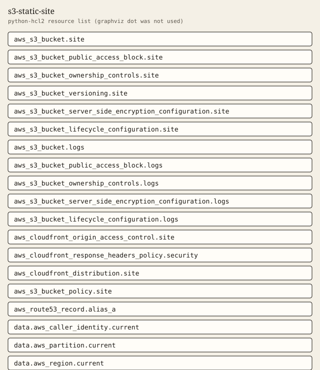

s3-static-site
Private S3 origin, CloudFront origin access control, and optional access logs.
Tests passed 6 of 6. Failed 0.
Inputs
| Name | Type | Required | Description |
|---|---|---|---|
| access_log_expiration_days | number | no | Days to keep objects in the module-managed access log bucket. |
| access_logs_bucket_name | string | no | Existing bucket name that receives CloudFront access logs. Null creates a bucket when enable_access_logs is true. |
| aliases | list(string) | no | Alternate domain names on the distribution. Must be empty unless certificate_arn is set. |
| certificate_arn | string | no | Optional ACM certificate ARN. Required when aliases is not empty. CloudFront accepts that certificate only from its global control-plane region. |
| comment | string | no | Comment stored on the CloudFront distribution. |
| default_root_object | string | no | Object CloudFront returns when a viewer requests the root of the distribution. |
| domain_name | string | no | DNS name for the optional Route 53 alias. Null skips the record. When set, it must also be one of aliases. |
| enable_access_logs | bool | no | Write CloudFront standard access logs. Added in 1.1.0. Off by default. |
| geo_restriction_locations | list(string) | no | Two-letter country codes used when geo_restriction_type is not none. |
| geo_restriction_type | string | no | CloudFront geographic restriction type. |
| kms_key_arn | string | no | Optional customer managed key ARN for site bucket encryption. Null uses SSE-S3. |
| name_prefix | string | yes | Lowercase prefix for the bucket, origin access control, and response headers policy. The module appends a short suffix. Do not encode an environment name here. |
| price_class | string | no | CloudFront price class name. This selects an edge set. It is not a currency amount. |
| route53_zone_id | string | no | Hosted zone id for the optional alias record. Set this together with domain_name. Null skips the record. |
| tags | map(string) | no | Extra tags merged onto every taggable resource. ManagedBy and Module are always set by the module. |
| versioning_enabled | bool | no | Enable versioning on the site bucket. |
| web_acl_id | string | no | Optional WAFv2 web ACL ARN attached to the distribution. Null leaves WAF off. |
Outputs
| Name | Description |
|---|---|
| access_logs_enabled | Whether CloudFront standard logging is configured. |
| alias_record_count | Number of Route 53 alias records managed by this module. |
| bucket_arn | ARN of the private site bucket. |
| bucket_name | Name of the private site bucket. |
| bucket_policy_actions | Actions allowed by the site bucket policy. The policy document uses this list and no other actions. |
| bucket_policy_condition_keys | Condition keys on the site bucket policy. AWS:SourceArn is set to this distribution's ARN. |
| bucket_policy_principal_service | Service principal allowed by the site bucket policy. |
| bucket_policy_statement_count | Number of statements written into the site bucket policy. |
| caller_context | Account, partition, and region resolved from data sources. Nothing in the module hardcodes them. |
| default_root_object | Default root object configured on the distribution. |
| distribution_arn | CloudFront distribution ARN. |
| distribution_domain_name | Domain name assigned to the CloudFront distribution. |
| distribution_id | CloudFront distribution id. |
| log_bucket_created | True when this module creates the access log bucket. |
| oac_origin_type | Origin type on the CloudFront origin access control. s3 means the distribution is not using a legacy origin access identity. |
| oac_signing_behavior | Signing behavior on the origin access control. |
| oac_signing_protocol | Signing protocol on the origin access control. |
| origin_access_control_id | Origin access control id attached to the S3 origin. |
| origin_ids | Origin ids on the distribution. The S3 origin is s3-site and references the origin access control. |
| public_access_block | Four public access block flags on the site bucket. |
| tag_audit | Tags on every taggable resource this module creates. |
| versioning_status | Versioning status of the site bucket. |
| viewer_protocol_policy | Viewer protocol policy on the default cache behavior. |
Example
The caller supplies the region. This example does not embed an account id.
module "site" {
source = "../.."
name_prefix = "demo-site"
tags = {
Example = "basic"
}
}
Tests
- private_oac passed
- versioning_suspended passed
- access_logs_bucket passed
- custom_domain_alias passed
- reject_bad_name_prefix passed
- reject_alias_without_certificate passed
Mock plan excerpt
mocked provider: ARNs and IDs are simulated. This excerpt is from terraform test with a mocked provider, not a live plan.
mocked provider: ARNs and IDs are simulated. This is terraform test -verbose, not a live plan.
tests\s3-static-site.tftest.hcl... in progress
run "private_oac"... pass
Terraform used the selected providers to generate the following execution
plan. Resource actions are indicated with the following symbols:
+ create
Terraform will perform the following actions:
# aws_cloudfront_distribution.site will be created
+ resource "aws_cloudfront_distribution" "site" {
+ aliases = []
+ arn = (known after apply)
+ caller_reference = (known after apply)
+ comment = "Private S3 origin behind CloudFront origin access control."
+ continuous_deployment_policy_id = (known after apply)
+ default_root_object = "index.html"
+ domain_name = (known after apply)
+ enabled = true
+ etag = (known after apply)
+ hosted_zone_id = (known after apply)
+ id = (known after apply)
+ in_progress_validation_batches = (known after apply)
+ is_ipv6_enabled = true
+ last_modified_time = (known after apply)
+ price_class = "PriceClass_100"
+ status = (known after apply)
+ tags = {
+ "ManagedBy" = "terraform"
+ "Module" = "s3-static-site"
+ "Owner" = "platform"
}
+ tags_all = (known after apply)
+ trusted_key_groups = (known after apply)
+ trusted_signers = (known after apply)
+ default_cache_behavior {
+ allowed_methods = [
Resources
graphviz dot was not installed. The figure is a python-hcl2 resource list.

Changelog
Changelog
All notable changes to this module are documented in this file.
The format is based on Keep a Changelog, and this module uses Semantic Versioning.
[1.1.0] - 2026-10-03
Added
- Optional CloudFront access log bucket via
enable_access_logs. Leaving the flag off does not replace the distribution.
[1.0.0] - 2026-10-03
Added
- Private S3 bucket, CloudFront origin access control, and a response headers policy.
Billable item names
Names only. This page does not quote a price. Example amounts, including a budget limit, are placeholders and are not recommendations. GuardDuty and Security Hub stay off unless a module switch is set, because those services are billable.
- Amazon S3
- Amazon CloudFront
- Amazon Route 53
- AWS WAF
- AWS Key Management Service